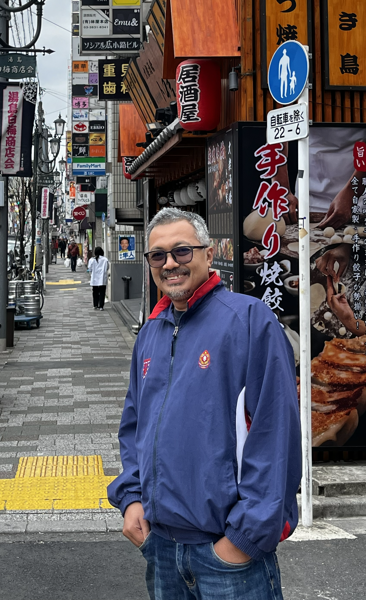

Facilities Operations
Hard and soft services, preventive maintenance, reliability and critical building systems.
FACILITIES · PROPERTY · ENGINEERING · SUSTAINABILITY
Facilities and property management leader with more than two decades of experience across engineering operations, critical environments, corporate real estate, sustainability and asset improvement.

Engineering foundation
Critical facilities experience
Corporate property leadership
Energy & sustainability programmes
ABOUT
My career has moved from plant maintenance and production engineering into healthcare facilities, property management, corporate real estate and sustainability-led asset programmes.
I work at the intersection of technical reliability, compliance, lifecycle planning, vendor management and commercial decision-making. The objective is simple: keep assets dependable, make investment decisions defensible, and improve the long-term performance of the built environment.
EXPERTISE
A blend of technical operations, property strategy and governance.
Hard and soft services, preventive maintenance, reliability and critical building systems.
Replacement strategy, refurbishment, CAPEX prioritisation and long-term asset performance.
Authority liaison, statutory obligations, safety, accreditation and risk-based decision support.
Energy efficiency, solar PV, green electricity, ESG programmes and carbon-reduction initiatives.
Technical scopes, evaluation, outsourced FM models, contractor performance and project governance.
UPS, switchgear, generators, power quality, HVAC, BAS, data centre and healthcare support systems.
EXPERIENCE
From hands-on engineering to enterprise facilities and property leadership.
Malaysia Aviation Group
Leading facilities maintenance, asset replacement planning, authority compliance, technical tender evaluation, utilities oversight and improvement initiatives across aviation-related property assets.
CIMB Bank Berhad
Managed corporate facilities and property portfolios covering hard and soft services, integrated FM, sustainability programmes, data centre initiatives and major energy-efficiency upgrades.
Institut Jantung Negara
Progressed through engineering, facilities and project roles in a critical healthcare environment, covering backup power, maintenance, compliance, renovation, expansion works and healthcare facility requirements.
Mitsumi Electronics (M) Sdn. Bhd.
Led production operations, maintained robotic equipment and supported international quality and environmental management systems.
Guan Chong Cocoa Manufacturer Sdn. Bhd.
Managed preventive maintenance and electrical-mechanical reliability for cocoa processing operations while leading technical personnel on shift.
HIGHLIGHTS
Representative milestones across energy, sustainability and facility performance.
4.5%
Delivered an energy-saving programme at IJN, reducing the monthly electricity bill by approximately 4.5%.
Tier III
Participated in management initiatives related to Uptime Institute Tier III certification.
GET
Managed successful Green Electricity Tariff subscription for CIMB in 2023.
GBI
Supported the successful Green Building Index certification for Menara CIMB in 2023.
LED lighting, energy-efficient lifts, BAS upgrades and air-conditioning efficiency programmes.
Evaluation of solar PV opportunities, Corporate Green Power Programme and green electricity procurement.
Deployment of EV charging facilities at corporate buildings, including progression toward fast DC charging.
Technical involvement in IJN expansion, refurbishment, design review, equipment assessment and contractor monitoring.
EDUCATION
1997 — 2000
Universiti Teknologi Malaysia · Skudai, Johor
INTERNATIONAL TECHNICAL EXPOSURE
Technical and professional training exposure covering critical electrical systems, district cooling, medical compressed air, power quality, isolation monitoring, ultra-clean ventilation and specialist healthcare equipment.
MOHD ASRI AYUB